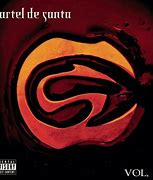
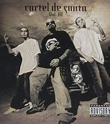

Todas Mueren por mi, es su cancion mas famosa del Cartel De Santa Vol 1
contando con mas de 200 millones de reproducciones.

El Arte Del Engaño, es la cancion mas famosa de Cartel De Santa Vol 2 Contando
con mas de 200 millones de Reproduccines.
Cheka wey, es la cancion mas famosa de VOLUMEN PROIIIBIDO, Contando
con 100 millones de reproducciones.

Vato Sencillo, es la cancion mas famosa de CARTEL DE SANTA VOL 4,
contando con 150 millones de reproducciones..
El Raton y El Queso, Volar Volar, Bombos y Tarolas,Traficando Rimas,son las canciones
mas famosas contando cada una con mas de 125 millones de reproducciones.
Si Te Vienen A Contar, Los Mensajes Del Whatsapp, son las canciones mas famosas, contando
cada una con 300millones de reproducciones.
Bailar y Volar,Leve, Culon Culito, son las canciones mas famosas, contando cada una con
250 millones de reproducciones.